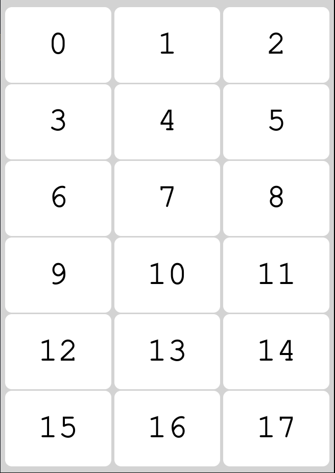

Click here for reagent labels! (Work in progress)
Click here for 60MT trinity labels!
Experimental
FM/SP label generator
Sample ID of first sample:
Number of samples:
Month and year to put on labels:
If the campaign may run between months/years then leave the respective fields blank and they will show as __ in the final labels
Number of 'sample blank' labels to generate:
Fill unused labels at end of sheet with "spare" labels where Sifter No and Sample ID can be manually written.
I have a half-used sheet of lables as the first sheet to be used by the printer
Number of used labels on sheet (or label# to start printing on):
Example sheet with numbers for labels:
